Table d'hôtes · Traiteur · Lausanne
Du feu dans les saveurs
Mon histoire
Je suis la Cheffe Kamano à domicile et traiteur, spécialisée dans la cuisine africaine et européenne. Passionnée par la gastronomie, je mets mon savoir-faire au service de vos événements privés et professionnels. Chaque menu est imaginé avec soin, en privilégiant des produits de qualité, des saveurs authentiques et une présentation élégante.
Titulaire d'un CFC de cuisine, j'ai construit mon parcours dans l'exigence et l'amour du détail.
"Dans chaque assiette, j'apporte la même exigence :
technique, patience, précision, créativité."
Premier prix des mérites
Centre patronal
GastroVaud
Distinction professionnelle
École professionnelle
de Montreux
Spécialités
Une cuisine qui marie la gastronomie française et européenne aux saveurs de l'Afrique, revisitées avec précision et élégance.
Chaque assiette naît d'une sélection personnelle : marchés, producteurs locaux et commerces spécialisés, pour des produits de caractère.
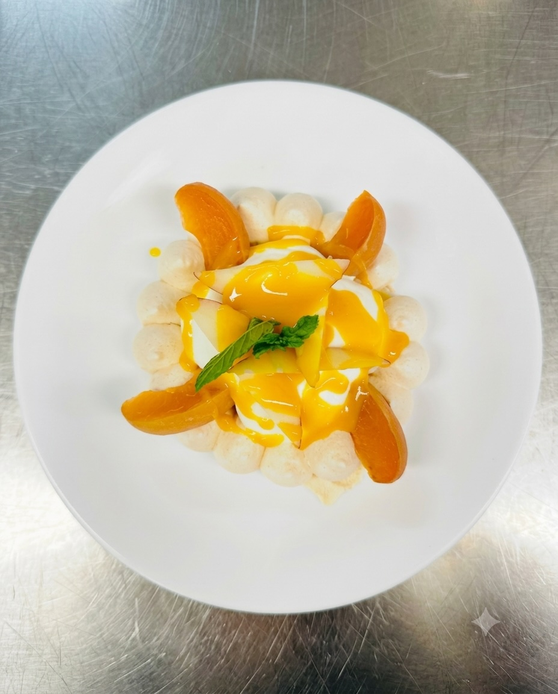
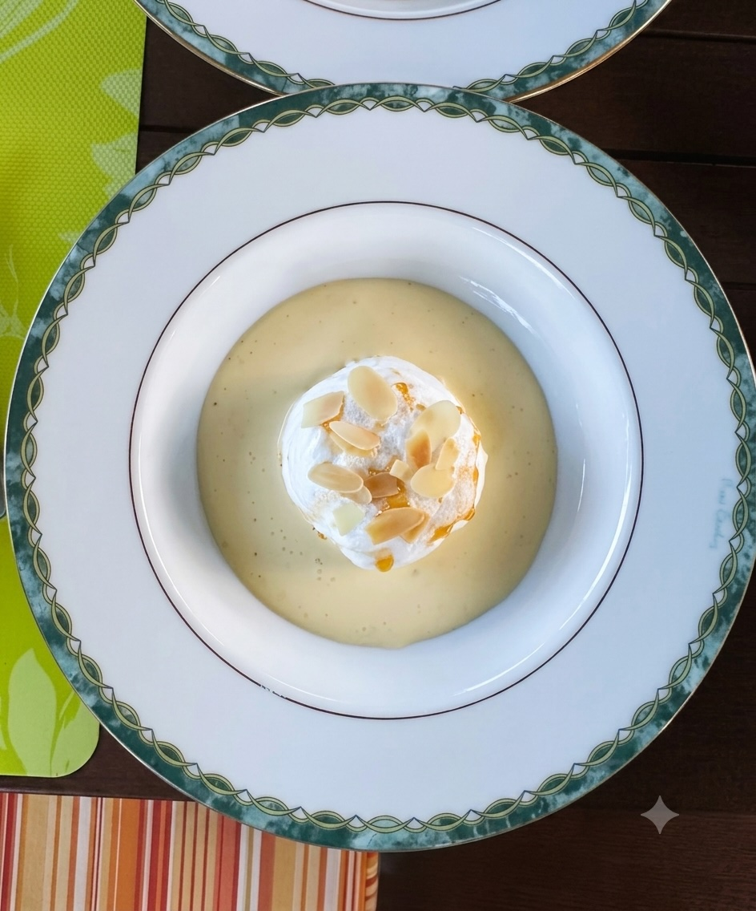
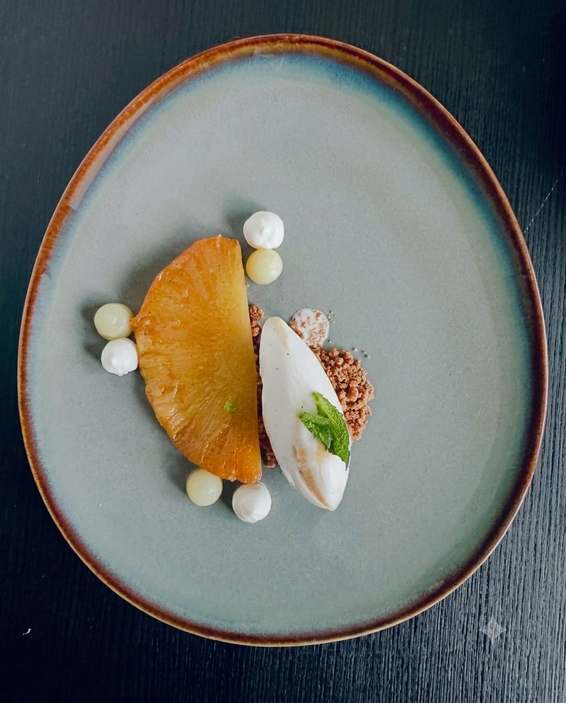
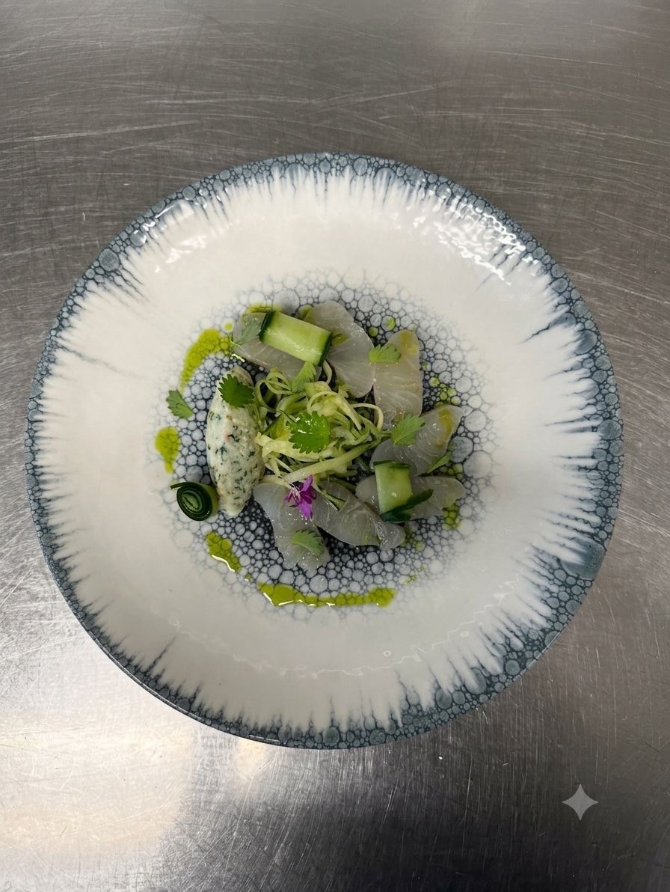
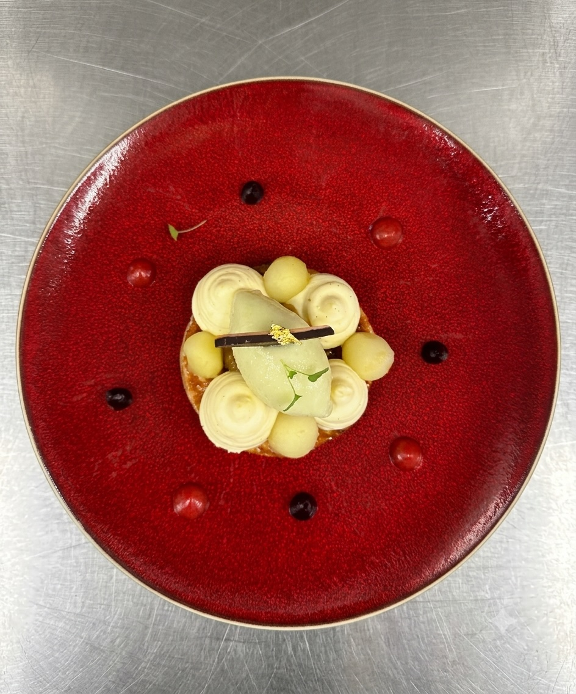
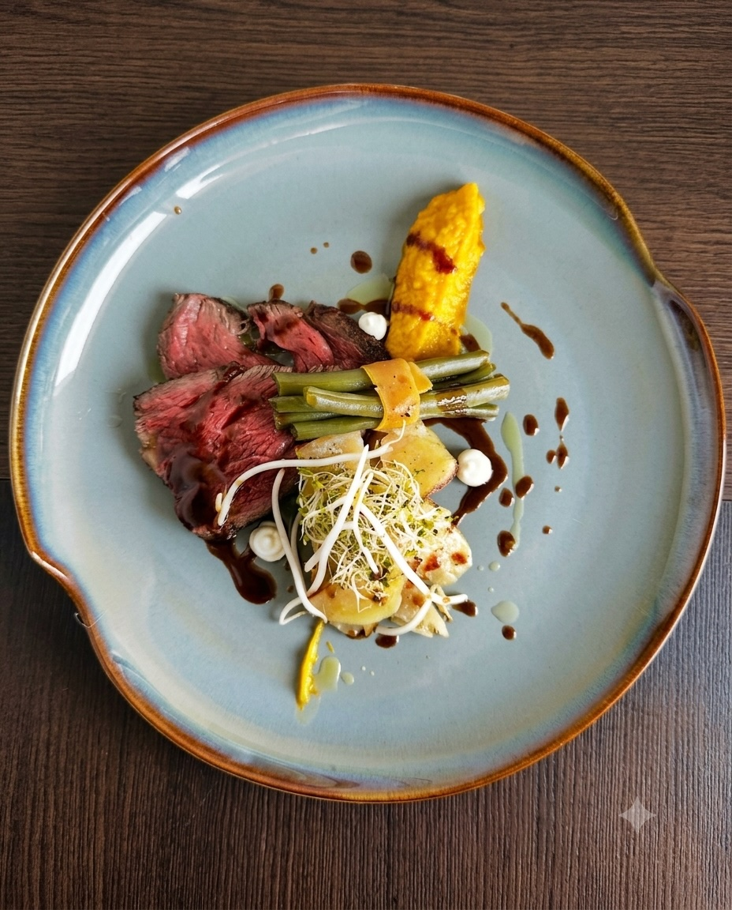
- Pâté en croûte signature
- Carpaccio de filet de bœuf
- Ballotine de volaille
- Sauces signature
- Menus dégustation
- Cuisine africaine gastronomique revisitée
Services
Fêtes · Réceptions d'entreprise
Lausanne & environs
Informations pratiques
- Minimum
- 6 convives
- Tarif
- Devis personnalisé
- Réservation
- Plusieurs jours à l'avance · Espèces ou virement
- Zone de prestation / livraison
- Lausanne & environs
Galerie
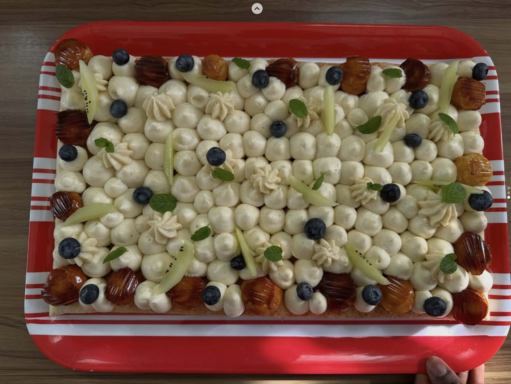
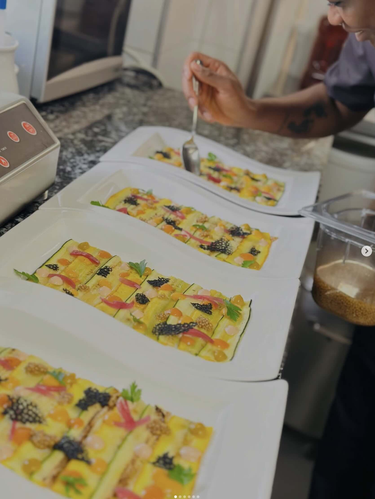
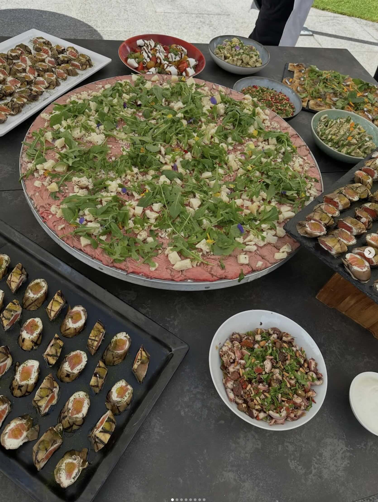
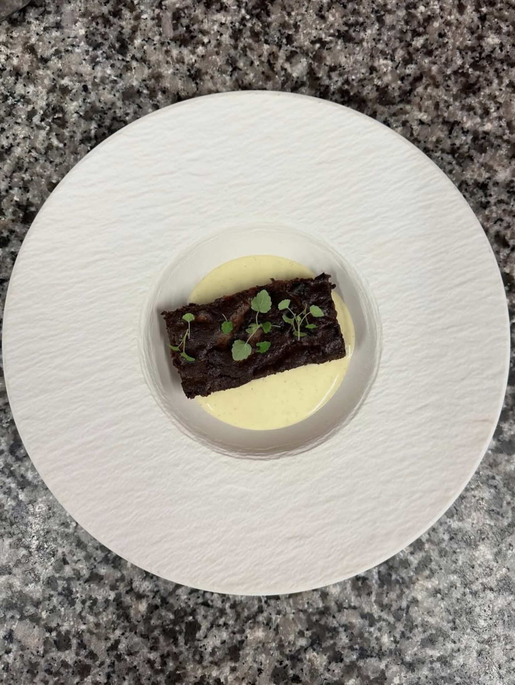
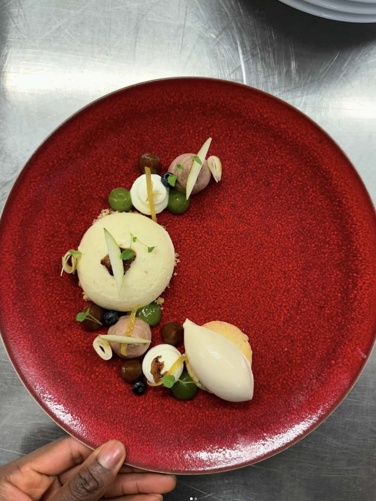
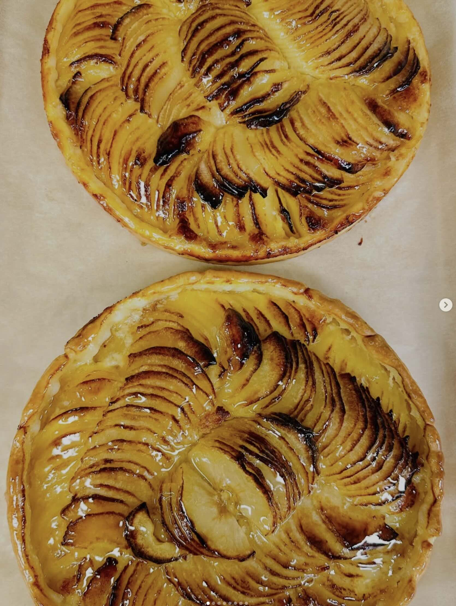
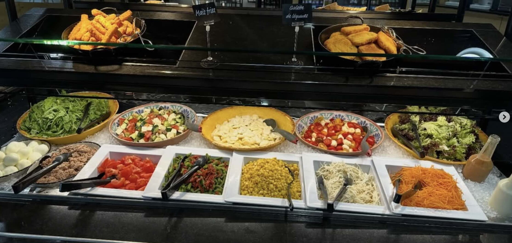
Témoignages
Une expérience gastronomique inoubliable. Les plats étaient d'une finesse remarquable, et l'attention portée à chaque détail nous a vraiment touchés.
Cheffe Kamano a sublimé notre réception de mariage. Ses menus alliant cuisine africaine et européenne ont émerveillé tous nos invités.
Le cours de cuisine était passionnant. La cheffe partage son savoir avec générosité et pédagogie. Nous repartons avec des techniques et des souvenirs précieux.
Contact
Vous avez un projet ou souhaitez en savoir plus ?
Contactez-moi directement — je vous réponds rapidement.
- Zone de prestation
- Lausanne & environs